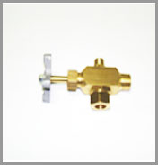
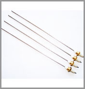
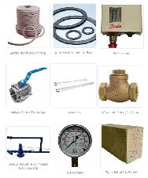
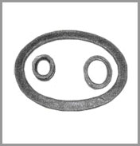
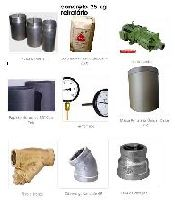
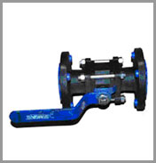
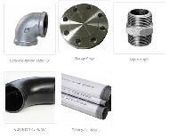

Caldeiras EONIA, focada na excelência de atendimento as necessidades industriais, gerando calor e produzindo vapor.
Tel.: 11 2941.4277
Cel.: 11 94077.7872
E-mail: eonia@eonia.com.br
Acessórios e pertences
- Exaustores e seus pertences;
- Válvulas de segurança;
- Injetores de água a vapor;
- Bomba d’ água;
- Válvula de retenção;
- Registros de descarga;
- Registro de nível;
- Guarnições para bocas de visita, flanges e curvas;
- Cordão para isolamento;
- Materiais refratários (tijolos, sacos e baldes) e isolantes;
- Tubos e conexões;
- Manômetros;
- Pressostato;
- Termômetros;
- Eletrodos sensores de nível;
- Eletrodos de ignição;
- Visores de nível (vidros);
- Anéis de borracha para vidros;
- Bóias automáticas;
- Isolamento térmico para tubulações;
- Purgadores;
- Chaminés;
- Lavadores de gás;
- Controle automático de nível d’água;
- Painéis de comando.
Alguns acessórios
Imagens ilustradas de alguns de nossos acessórios comercializados.







